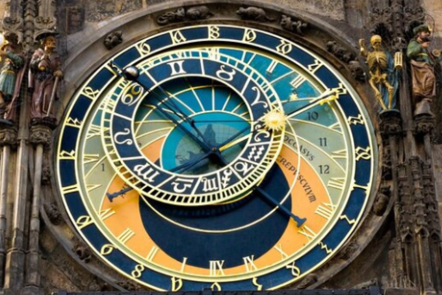

Ønsker til studieturen

Škoda Auto FabrikAt besøge Škoda i Tjekkiet er |

Vandkraftværket Orlik (el.lign)Det er vigtigt at besøge |

Prags borg (Prazský Hrad)Det er vigtigt at besøge Prags |
Karlsbroen (Karluv Most)Det er vigtigt at besøge |

Astronomiske ur (Prazský Orloj)Det er afgørende at besøge |

Klementinum BibliotekAt besøge Klementinum i |
Národní Technické MuzeumDet er afgørende at besøge |
Det Dansende HusDet er vigtigt at besøge Det |
Lucas Giannini Guldbech©